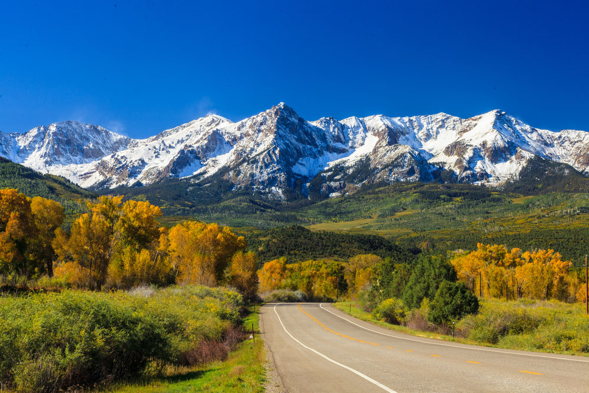

North America
1- Yosemite National Park, California

It is located in California in the United States of America,
and the Merced River passes through it through a narrow valley.
It contains many waterfalls, about 130 species of flowering plants and
about 31 species of trees,including pine and cedar forests
, in addition to more than 220 species of birds.
2- Golden Gate Bridge, San Francisc

The Golden Gate Bridge, or the Golden Gate Bridge,
is a suspension bridge that crosses the Californian Golden Gate
and forms the meeting point between San Francisco Bay and the Pacific Ocean.
It is San Francisco's most famous landmark and one of its symbols,
recognizable directly by its orange color and architecture.
3- Soar the Columbia River, the Pacific Ocean in the United States

The Columbia River Valley is located in the Pacific Northwest of the United States.
between the Columbia River Plateau and the Pacific Ocean.
4- The Rocky Mountains, British Columbia and New Mexico

It is a group of mountain ranges located in the west of the North American continent,
from which 14 rivers originate, including the Colorado and Missouri.
It includes many public parks and reserves and is one of the main destinations s
for those wishing to go camping, climbing, hunting, cycling and snowboarding.